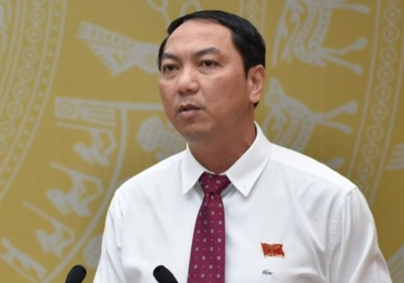

DIỄN ĐÀN CỦA HỘI LIÊN HIỆP THANH NIÊN VIỆT NAM
Thủ tướng Chính phủ quyết định thi hành kỷ luật bằng hình thức khiển trách đối với ông Lâm Minh Thành, Chủ tịch UBND tỉnh Kiên Giang, do đã có vi phạm trong công tác và Ủy ban Kiểm tra Trung ương (UBKT) đã thi hành kỷ luật về Đảng.
Thời gian thi hành kỷ luật tính từ ngày công bố quyết định kỷ luật của UBKT Trung ương, ngày 20-6-2023. Trước đó, kỳ họp thứ 29 của UBKT Trung ương đã xem xét kết quả giải quyết tố cáo đối với Phó Bí thư Tỉnh ủy, Bí thư Ban cán sự đảng, Chủ tịch UBND tỉnh Kiên Giang Lâm Minh Thành. Theo đó, UBKT Trung ương nhận thấy ông Lâm Minh Thành đã vi phạm quy chế làm việc; thiếu trách nhiệm, buông lỏng lãnh đạo, chỉ đạo, để một số tổ chức, cá nhân vi phạm quy định của Đảng, pháp luật của Nhà nước trong công tác cán bộ và mua sắm, quản lý, sử dụng sinh phẩm, hóa chất, vật tư, trang thiết bị y tế phòng, chống dịch bệnh COVID-19. Xét nội dung, tính chất, mức độ, hậu quả, nguyên nhân vi phạm; căn cứ quy định của Đảng, UBKT Trung ương quyết định thi hành kỷ luật khiển trách ông Lâm Minh Thành.
ASM WEB1013 là Assignment môn Xây dựng website
Điện thoại: 0987654321
Email: web1013@dinhnt.com